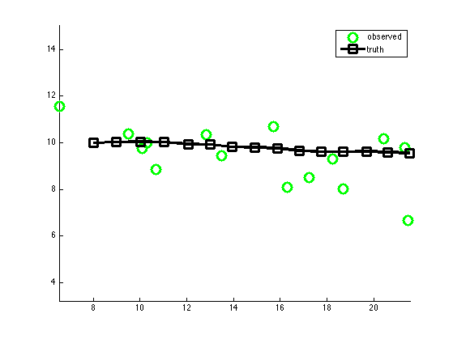
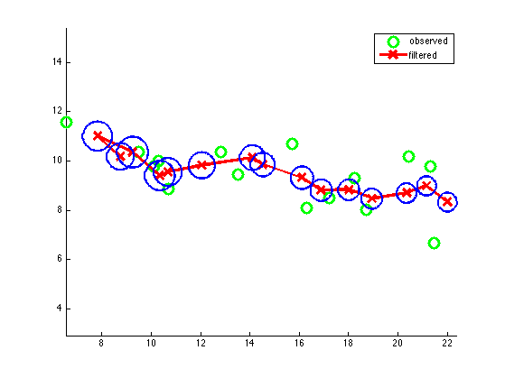
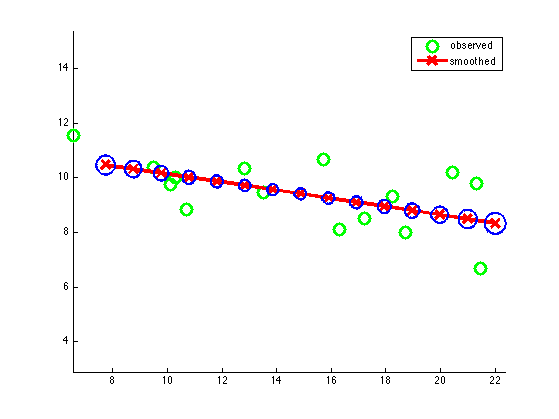

Kalman Filter Tracking Demo: move point in 2d plane
State = (x y xdot ydot). We only observe (x y).
X(t+1) = F X(t) + noise(Q) Y(t) = H X(t) + noise®
% This file is from pmtk3.googlecode.com ss = 4; % state size os = 2; % observation size F = [1 0 1 0; 0 1 0 1; 0 0 1 0; 0 0 0 1]; H = [1 0 0 0; 0 1 0 0]; if 1 % generate Figure 15.A.1 of "Probabilistic graphical models", % Koller and Friedman, MIT Press 2009 Q = 0.001*eye(ss); R = 1*eye(os); initmu = [8 10 1 0]'; initV = 1*eye(ss); else % generate Figure 15.11 of "Artificial Intelligence: a Modern Approach", % Russell and Norvig, 3nd edition, Prentice Hall, 2009 % This is more "jaggedy" than the K&F settings. Q = 0.1*eye(ss); R = 0.5*eye(os); initmu = [10 10 1 0]'; initV = 5*eye(ss); end setSeed(9); T = 15; [x,y] = ldsSample(F, H, Q, R, initmu, T); [xfilt, Vfilt, loglik] = kalmanFilter(y, F, H, Q, R, initmu, initV); [xsmooth, Vsmooth] = kalmanSmoother(y, F, H, Q, R, initmu, initV); dfilt = x([1 2],:) - xfilt([1 2],:); mse_filt = sqrt(sum(sum(dfilt.^2))) dsmooth = x([1 2],:) - xsmooth([1 2],:); mse_smooth = sqrt(sum(sum(dsmooth.^2))) figure; %subplot(2,1,1) hold on plot(y(1,:), y(2,:), 'go', 'linewidth', 3, 'markersize', 12); plot(x(1,:), x(2,:), 'ks-', 'linewidth', 3, 'markersize', 12); legend('observed', 'truth') axis equal %set(gca,'ylim',[5 14]) printPmtkFigure('kalmanTrackingTruth') figure; hold on plot(y(1,:), y(2,:), 'go', 'linewidth', 3, 'markersize', 12); plot(xfilt(1,:), xfilt(2,:), 'rx-', 'linewidth', 3, 'markersize', 12); for t=1:T, gaussPlot2d(xfilt(1:2,t), 0.1*Vfilt(1:2, 1:2, t), 'color', 'b', 'plotMarker', false); end hold off legend('observed', 'filtered') axis equal %set(gca,'ylim',[5 14]) printPmtkFigure('kalmanTrackingFiltered') figure; %subplot(2,1,2) hold on plot(y(1,:), y(2,:), 'go', 'linewidth', 3, 'markersize', 12); plot(xsmooth(1,:), xsmooth(2,:), 'rx-', 'linewidth', 3, 'markersize', 12); for t=1:T, gaussPlot2d(xsmooth(1:2,t), 0.1*Vsmooth(1:2, 1:2, t), 'color', 'b', 'plotMarker', false); end hold off legend('observed', 'smoothed') axis equal %set(gca,'ylim',[5 14]) printPmtkFigure('kalmanTrackingSmoothed')
mse_filt =
3.7931
mse_smooth =
2.6065
  